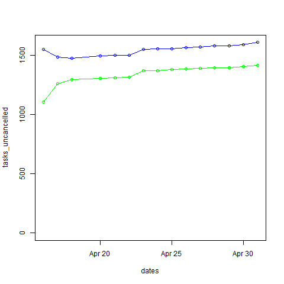
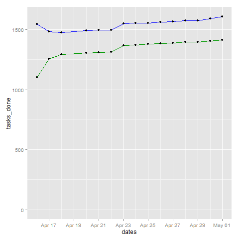
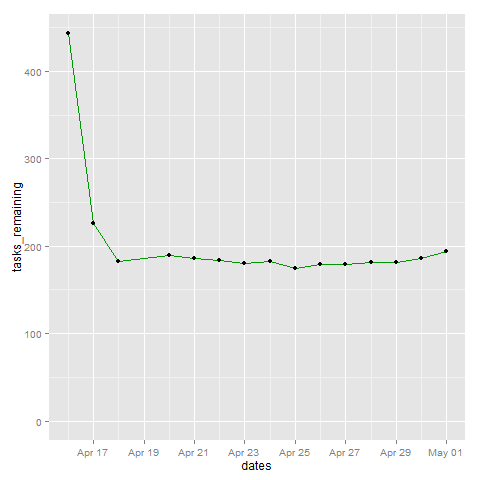

Getting R and ggplot2 to work in Emacs Org Mode Babel blocks; also, tracking the number of TODOs
I started tracking the number of tasks I had in Org Mode so that I could find out if my TODO list tended to shrink or grow. It was easy to write a function in Emacs Lisp to count the number of tasks in different states and summarize them in a table.
(defun sacha/org-count-tasks-by-status () (interactive) (let ((counts (make-hash-table :test 'equal)) (today (format-time-string "%Y-%m-%d" (current-time))) values output) (org-map-entries (lambda () (let* ((status (elt (org-heading-components) 2))) (when status (puthash status (1+ (or (gethash status counts) 0)) counts)))) nil 'agenda) (setq values (mapcar (lambda (x) (or (gethash x counts) 0)) '("DONE" "STARTED" "TODO" "WAITING" "DELEGATED" "CANCELLED" "SOMEDAY"))) (setq output (concat "| " today " | " (mapconcat 'number-to-string values " | ") " | " (number-to-string (apply '+ values)) " | " (number-to-string (round (/ (* 100.0 (car values)) (apply '+ values)))) "% |")) (if (called-interactively-p 'any) (insert output) output))) (sacha/org-count-tasks-by-status)
I ran this code over several days. Here are my results as of 2014-05-01
| Date | DONE | START. | TODO | WAIT. | DELEG. | CANC. | SOMEDAY | Total | % done | + done | +canc. | + total | + t - d - c | Note |
|---|---|---|---|---|---|---|---|---|---|---|---|---|---|---|
| 2014-04-16 | 1104 | 1 | 403 | 3 | 1 | 104 | 35 | 1651 | 67% | |||||
| 2014-04-17 | 1257 | 0 | 114 | 4 | 1 | 171 | 107 | 1654 | 76% | 153 | 67 | 3 | -217 | Lots of trimming |
| 2014-04-18 | 1292 | 0 | 74 | 4 | 5 | 183 | 100 | 1658 | 78% | 35 | 12 | 4 | -43 | A little bit more trimming |
| 2014-04-20 | 1305 | 0 | 80 | 4 | 5 | 183 | 100 | 1677 | 78% | 13 | 0 | 19 | 6 | |
| 2014-04-21 | 1311 | 1 | 78 | 4 | 4 | 184 | 99 | 1681 | 78% | 6 | 1 | 4 | -3 | |
| 2014-04-22 | 1313 | 2 | 75 | 4 | 4 | 184 | 99 | 1681 | 78% | 2 | 0 | 0 | -2 | |
| 2014-04-23 | 1369 | 4 | 66 | 4 | 5 | 186 | 101 | 1735 | 79% | 56 | 2 | 54 | -4 | Added sharing/index.org |
| 2014-04-24 | 1371 | 3 | 69 | 4 | 5 | 186 | 101 | 1739 | 79% | 2 | 0 | 4 | 2 | |
| 2014-04-25 | 1379 | 3 | 60 | 3 | 5 | 189 | 103 | 1742 | 79% | 8 | 3 | 3 | -8 | |
| 2014-04-26 | 1384 | 3 | 65 | 3 | 5 | 192 | 103 | 1755 | 79% | 5 | 3 | 13 | 5 | |
| 2014-04-27 | 1389 | 2 | 66 | 3 | 5 | 192 | 103 | 1760 | 79% | 5 | 0 | 5 | 0 | |
| 2014-04-28 | 1396 | 3 | 67 | 3 | 5 | 192 | 103 | 1769 | 79% | 7 | 0 | 9 | 2 | |
| 2014-04-29 | 1396 | 3 | 67 | 3 | 5 | 192 | 103 | 1769 | 79% | 0 | 0 | 0 | 0 | |
| 2014-04-30 | 1404 | 4 | 70 | 4 | 5 | 192 | 103 | 1782 | 79% | 8 | 0 | 13 | 5 | |
| 2014-05-01 | 1413 | 4 | 80 | 3 | 4 | 193 | 103 | 1800 | 79% | 9 | 1 | 18 | 8 |
Here's the source for that table:
| Date | DONE | START. | TODO | WAIT. | DELEG. | CANC. | SOMEDAY | Total | % done | + done | +canc. | + total | + t - d - c | Note | |------------+------+--------+------+-------+--------+-------+---------+-------+--------+--------+--------+---------+-------------+----------------------------| | 2014-04-16 | 1104 | 1 | 403 | 3 | 1 | 104 | 35 | 1651 | 67% | | | | | | | 2014-04-17 | 1257 | 0 | 114 | 4 | 1 | 171 | 107 | 1654 | 76% | 153 | 67 | 3 | -217 | Lots of trimming | | 2014-04-18 | 1292 | 0 | 74 | 4 | 5 | 183 | 100 | 1658 | 78% | 35 | 12 | 4 | -43 | A little bit more trimming | | 2014-04-20 | 1305 | 0 | 80 | 4 | 5 | 183 | 100 | 1677 | 78% | 13 | 0 | 19 | 6 | | | 2014-04-21 | 1311 | 1 | 78 | 4 | 4 | 184 | 99 | 1681 | 78% | 6 | 1 | 4 | -3 | | | 2014-04-22 | 1313 | 2 | 75 | 4 | 4 | 184 | 99 | 1681 | 78% | 2 | 0 | 0 | -2 | | | 2014-04-23 | 1369 | 4 | 66 | 4 | 5 | 186 | 101 | 1735 | 79% | 56 | 2 | 54 | -4 | Added sharing/index.org | | 2014-04-24 | 1371 | 3 | 69 | 4 | 5 | 186 | 101 | 1739 | 79% | 2 | 0 | 4 | 2 | | | 2014-04-25 | 1379 | 3 | 60 | 3 | 5 | 189 | 103 | 1742 | 79% | 8 | 3 | 3 | -8 | | | 2014-04-26 | 1384 | 3 | 65 | 3 | 5 | 192 | 103 | 1755 | 79% | 5 | 3 | 13 | 5 | | | 2014-04-27 | 1389 | 2 | 66 | 3 | 5 | 192 | 103 | 1760 | 79% | 5 | 0 | 5 | 0 | | | 2014-04-28 | 1396 | 3 | 67 | 3 | 5 | 192 | 103 | 1769 | 79% | 7 | 0 | 9 | 2 | | | 2014-04-29 | 1396 | 3 | 67 | 3 | 5 | 192 | 103 | 1769 | 79% | 0 | 0 | 0 | 0 | | | 2014-04-30 | 1404 | 4 | 70 | 4 | 5 | 192 | 103 | 1782 | 79% | 8 | 0 | 13 | 5 | | | 2014-05-01 | 1413 | 4 | 80 | 3 | 4 | 193 | 103 | 1800 | 79% | 9 | 1 | 18 | 8 | |
I wanted to graph this with Gnuplot, but it turns out that Gnuplot is difficult to integrate with Emacs on Microsoft Windows. I gave up after a half an hour of poking at it, since search results indicated there were long-standing problems with how Gnuplot got input from Emacs. Besides, I'd been meaning to learn more R anyway, and R is more powerful when it comes to statistics and data visualization.
Getting R to work with Org Mode babel blocks in Emacs on Windows was a challenge. Here are some of the things I ran into.
The first step was easy: Add R to the list of languages I could evaluate in a source block (I already had dot and ditaa from previous experiments).
(org-babel-do-load-languages 'org-babel-load-languages '((dot . t) (ditaa . t) (R . t)))
But my code didn't execute at all, even when I was trying something that printed out results instead of drawing images. I got a little lost trying to dig into org-babel-execute:R with edebug, eventually ending up in comint.el. The real solution was even easier. I had incorrectly set inferior-R-program-name to the path of R in my configuration, which made M-x R work but which meant that Emacs was looking in the wrong place for the options to pass to R (which Org Babel relied on). The correct way to do this is to leave inferior-R-program-name with the default value (Rterm) and make sure that my system path included both the bin directory and the bin\x64 directory.
Then I had to pick up the basics of R again. It took me a little time to figure out that I needed to parse the columns I pulled in from Org, using strptime to convert the date column and as.numeric to convert the numbers. Eventually, I got it to plot some results with the regular plot command.
dates <- strptime(as.character(data$Date), "%Y-%m-%d") tasks_done <- as.numeric(data$DONE) tasks_uncancelled <- as.numeric(data$Total) - as.numeric(data$CANC.) df <- data.frame(dates, tasks_done, tasks_uncancelled) plot(x=dates, y=tasks_uncancelled, ylim=c(0,max(tasks_uncancelled))) lines(x=dates, y=tasks_uncancelled, col="blue", type="o") lines(x=dates, y=tasks_done, col="green", type="o")

I wanted prettier graphs, though. I installed the ggplot2 package and started figuring it out. No matter what I did, though, I ended up with a blank white image instead of my graph. If I used M-x R instead of evaluating the src block, the code worked. Weird! Eventually I found out that adding print(...) around my ggplot made it display the image correctly. Yay! Now I had what I wanted.
library(ggplot2) dates <- strptime(as.character(data$Date), "%Y-%m-%d") tasks_done <- as.numeric(data$DONE) tasks_uncancelled <- as.numeric(data$Total) - as.numeric(data$CANC.) df <- data.frame(dates, tasks_done, tasks_uncancelled) plot = ggplot(data=df, aes(x=dates, y=tasks_done, ymin=0)) + geom_line(color="#009900") + geom_point() + geom_line(aes(y=tasks_uncancelled), color="blue") + geom_point(aes(y=tasks_uncancelled)) print(plot)

The blue line represents the total number of tasks (except for the cancelled ones), and the green line represents tasks that are done.
Here's something that looks a little more like a burn down chart, since it shows just the number of things to be done:
library(ggplot2) dates <- strptime(as.character(data$Date), "%Y-%m-%d") tasks_remaining <- as.numeric(data$Total) - as.numeric(data$CANC.) - as.numeric(data$DONE) df <- data.frame(dates, tasks_remaining) plot = ggplot(data=df, aes(x=dates, y=tasks_remaining, ymin=0)) + geom_line(color="#009900") + geom_point() print(plot)

The drastic decline there is me realizing that I had lots of tasks that were no longer relevant, not me being super-productive. =)
As it turns out, I tend to add new tasks at about the rate that I finish them (or slightly more). I think this is okay. It means I'm working on things that have next steps, and next steps, and steps beyond that. If I add more tasks, that gives me more variety to choose from. Besides, I have a lot of repetitive tasks, so those never get marked as DONE over here.
Anyway, cool! Now that I've gotten R to work on my system, you'll probably see it in even more of these blog posts. =D Hooray for Org Babel and R!